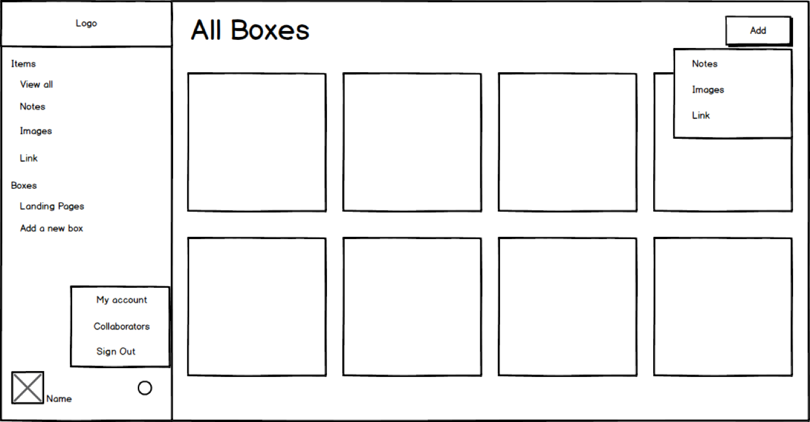
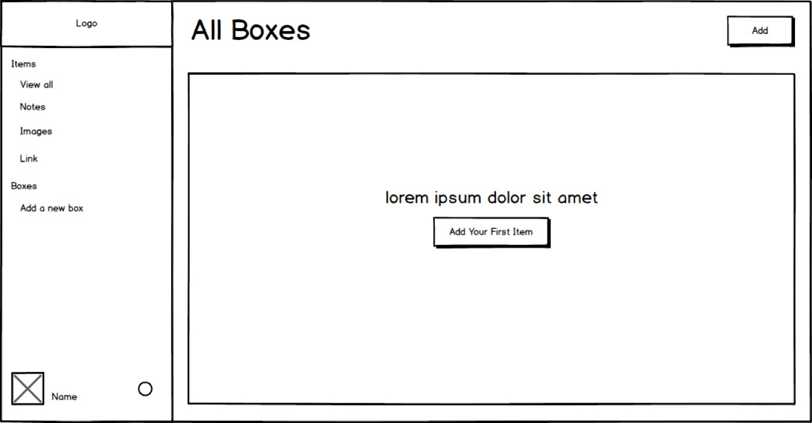
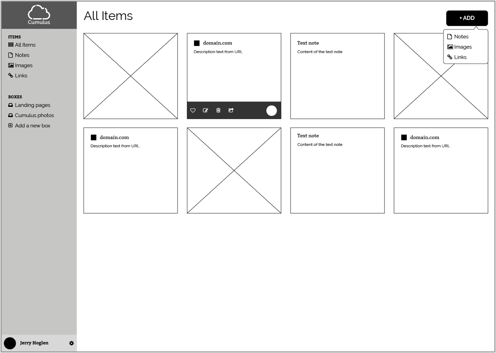
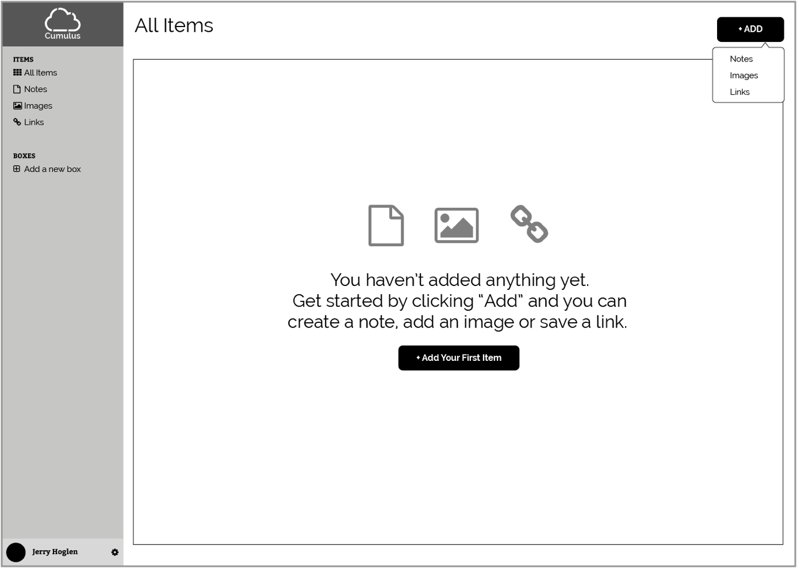

SUMMARY
Sara is a new mom struggling to balance raising her baby, working a 9-5 job and trying to build her side hustle into a business. She is smart, creative but not the most tech savvy. Managing and organizing everything in her life is scattered across web browsers, notepads, and applications.
She dreams of the day when technology will help her organize her beautiful mess and allow her to access all her information in one place from any device at any time. That was our goal when building Cumulus and we believe we created the solution Sara has always wanted.
PROBLEM
There are many software programs, websites, and apps that allow users to save notes, images, and links but none that can achieve all of these goals and be user-friendly. Some of the problems we found when conducting research were.
- Most users have multiple apps and sites they use to access their information, this makes it difficult to find the information they need quickly
- Storing information requires using passwords and usernames which can be hard to track and remember when using multiples apps and software
- People want access to information at all times whether online or offline and not many solutions are out there
- Keeping track of bookmarks between web browsers is hard enough when you add in multiple devices trying to access that information it becomes almost impossible.
- Users want access to all their content in one place
SOLUTION
Cumulus’ solution to this problem was to design and build a platform that allows its user’s to save all types of content such images, links, and notes and creates boxes that can categorize the information, however, the user wants. Another great feature of Cumulus is its’s users ability to share and collaborate with each other in real time from any device.
 View Web Prototype
View Web Prototype
MY PROCESS
USER RESEARCH HIGHLIGHTS
75.6%
Save content that they find on the web to view again later.
Devices
All users tested use multiple devices to access information and want the same access to all devices.
90%
Use their phones as the first place they begin their searches for news, social and entertainment.
81%
Are willing to pay for a service that allows them to save and access their information on an organized platform from any device.
COMPETITIVE ANALYSIS RESULTS


My competitive analysis was done with Dropbox, Pinterest, and Evernote. Individually these applications have some really great features and I believe what’s missing in the market is an application that combines’s many of these features into one application. I wanted to focus on a product that would allow the user to save information, share information and collaborate with their teams in a seamless way on any device.
The product should have key features like...
- Easy file upload
- Ability to share information with share buttons
- Collaborate in real time so if a user updates from their device the information is accessible immediately
Some nice to have features would be...
- Browser extensions that would allow users to save with one click to Cumulus
- Easy to use drag and drop file upload option
USER PERSONAS


Three users were tested and personas were created. Alex wants access to her information from any device. John really wants to be able to collect images, as well as group colors and websites together to build better inspiration boards. Kaylie lives on social media and the web, she finds it hard to keep track of all the information she collects and wants one application to store everything.
USER FLOWS
Using surveys collected for new and returning users, flow diagrams were created in detail so the site architecture could be created which would become the template for the site and allow us to begin the wireframing process.
 View Flow Diagrams
View Flow Diagrams
BRANDING
Inspiration for the Cumulus brand came from mind mapping. I really wanted a brand that would stand out and the idea of cloud based software helped guide our direction.

Logo Design Pen and Paper Sketching
Lots of sketching with pen and paper and multiple iterations were done before coming up with the final hand drawn logos you see in this image.
Iterating in Adobe Illustrator
Once I narrowed the selection down we began iterating in Adobe Illustrator. I also did some additional preference testing to help get a wider range of feedback.

Final Logo
The final logo was narrowed down and we decided on the design you see here. The cloud broken into three sections and using three different colors really symbolizes the goal of Cumulus, giving user's the ability to save, share and collaborate.
Color Pallete

Typography
For my font pairing I chose Bitter for the header font and Raleway for paragraph text. I chose Bitter because it was designed specifically for the intention to be used on the web and on many devices. The slab serif font has a natural bold style that looks great as a header font.
I chose Raleway as my paragraph font because its a sans serif font that looks great with Bitter and the appropriateness of this project seems spot on. The fonts together create an elegant and clean style but the sans serif of Raleway still adds a touch of playfulness. I added a small example of text below to show how they would pair together.
Headers
H1 Bitter
H2 Bitter
H3 Bitter
Paragraphs
Raleway font size 16pt. Even though computer hardware is central to almost everything we do, it’s easy lag behind in the advances made in hardware software. Desktops that are four or five years old, for example, obsolete.
Example
This is a headline
Even though computer hardware is central to almost everything we do, it’s easy lag behind in the advances made in hardware software. Desktops that are four or five years old, for example, obsolete.
WIREFRAMING
Initial wireframing was done using Balsamiq. I chose Balsamiq because of its hand-drawn look and feel. This allowed me to focus on the content layout versus page styling. I created the initial homepage, dashboard, blank state, account settings page, add billing screen and upload image modal window.
Homepage

Dashboard
Dashboard Blank State
Dashboard Account Settings
BLACK AND WHITE WIREFRAMING
After the first round of wireframes was completed I then began to create lo-fidelity black and white wireframes in Adobe Illustrator. This helped to bring the layout to life and understand how the content blocks would flow together. I created 30 artboards for all of the various screens that would be used in the web application before I began user testing in Invision.
Homepage

Dashboard
Dashboard Blank State
USER TESTING
Once the Illustrator wireframes were completed I exported the artboards over to Invision and built out a lo-fidelity prototype for my users to begin testing against the user flows we had created. We received mostly positive feedback on the layout of the site. One opportunity we found was the size of CTA buttons being too small so that was adjusted and I moved on to the visual design of the site.
View Invision PrototypeVISUAL DESIGN
After I adjusted the opportunities from the prototype feedback I felt confident about beginning the visual design process in Sketch. I took my illustrator files combined with the style guide and made the screens in Sketch. I built out 22 artboards to ensure all screens were accounted for so I could create another Invision prototype for further testing.
Sketch Artboards
View Sketch ArtboardsUSER TESTING II
I used Usability Hub to complete further testing. I had users complete a five-second test, a preference test and a navigation test. This helped us really focus on the user experience challenges before we moved on to the visual design of the site.
Five-Second Test
I created a five-second test that focused on the landing page layout. The goal of the five-second test was to see if users would be able to gain the trust of the brand, easily identify what the brand’s intention is and if the content’s featured met our goals.
View Five-Second TestPreference Test
I created a preference test for an add button on the dashboard interface. I kept the add button on the left nav window in both screens. On the second screen, I added an additional Add button to the top right of the dashboard for users to be able to add a new box with or without the left nav window opened. 100% of the users chose the additional Add button so I kept that in the final design.

Navigation Test
I created a navigation flow test on the dashboard as well after I added the new add button to ensure placement was in the best place for the user. Below you can see the heat map from the user clicks on the button showing the positive results of the placement of the button.
 View Navigation Test
View Navigation Test
PROTOTYPING II
A final prototype was built in invision after testing was completed in Usability Hub and the design was adjusted to reflect feedback. Check out the link below to view the Invision prototype.
View Invision PrototypeDEVELOPMENT
I was able to move into the development phase and coded the site myself. It was coded in Atom Editor using HTML, CSS, and JavaScript. I chose to use CSS Grid Layout for this website to show my coding skills and because I wanted to challenge myself to use a new tool that is actively growing in the development community. The site is being hosted on Github and I used Iterm 2 as my terminal to push the code to GitHub. You can view the web prototype below and also check out my GitHub profile to review the code.

CONCLUSION
Cumulus was created with the goal of solving an issue that impacts so many people today. The constant struggle between using old tools like pen and paper, web browsers and software programs has made it challenging for users to be efficient and productive. We sought out to solve those problems in one application. I believe based on user testing, multiple iterations and positive feedback we received throughout that process that we have created a tool that will positively impact users like Sara and allow teams to accomplish their goals.